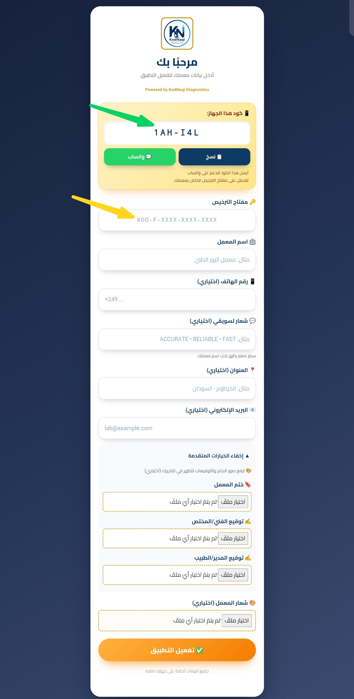
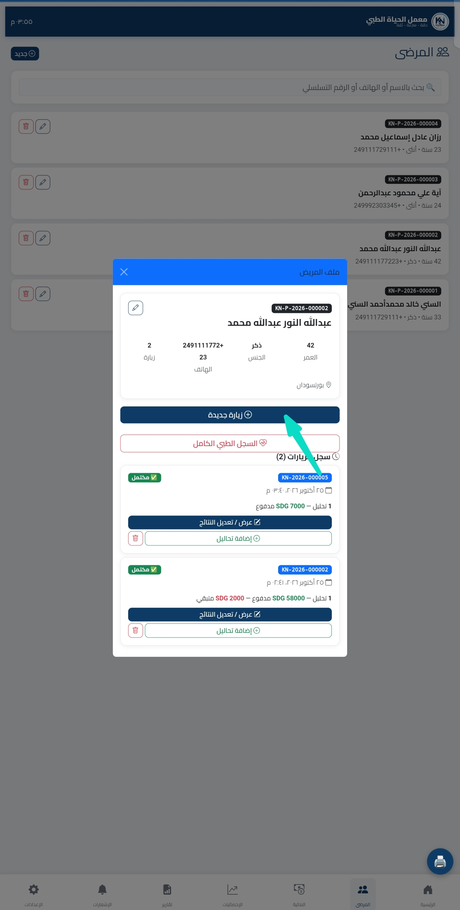
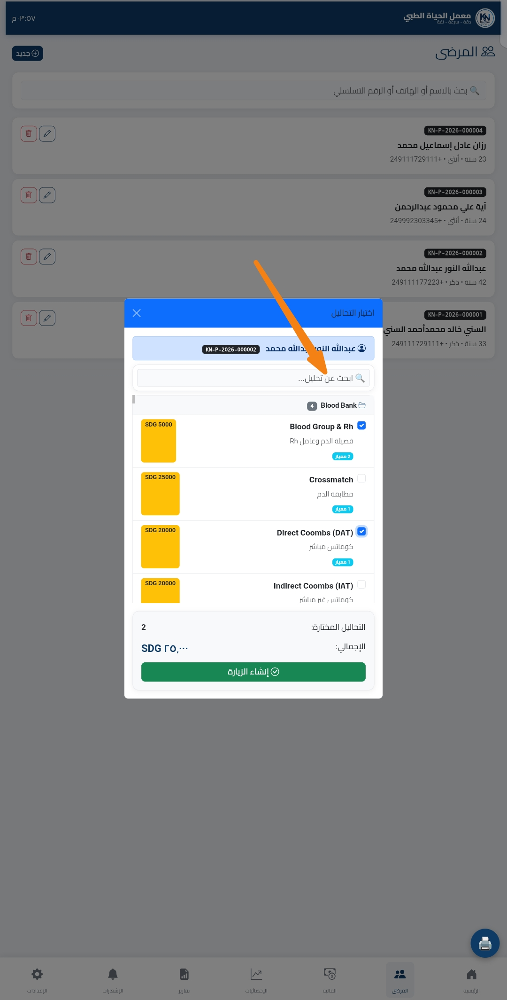
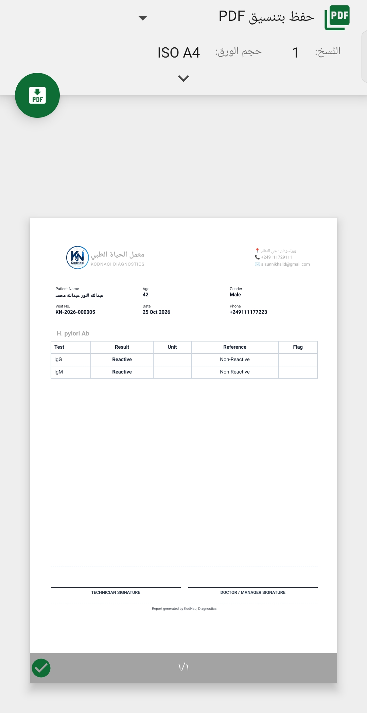
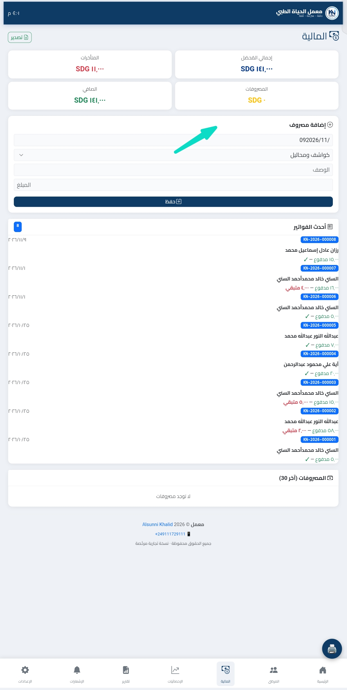
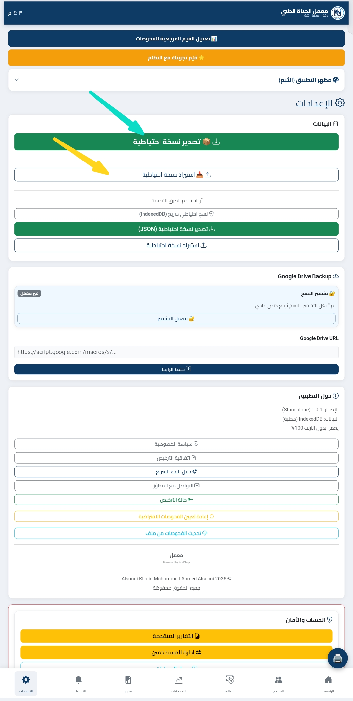
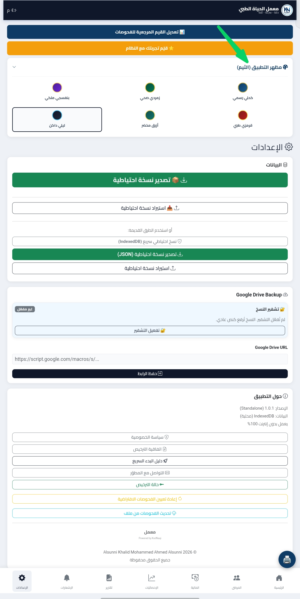

KodNaqi
Diagnostics
🎬 دليل التدريب الرسمي
هذا الدليل مُصمّم لتدريب فريق معملك خلال ساعتين. كل درس يحتوي على خطوات واضحة وصور توضيحية لضمان الاستيعاب الكامل.
1 تشغيل النظام أول مرة
🎯 الهدف:
تفعيل التطبيق وإنشاء حساب المدير الأساسي.
📋 الخطوات:
- افتح التطبيق: اضغط على أيقونة KodNaqi من الشاشة الرئيسية لهاتفك.
- شاشة الترحيب والتفاصيل: أدخل كود الجهاز، ومفتاح الترخيص، وبيانات المعمل.
- إدخال بيانات المعمل: اسم المعمل، الهاتف، العنوان، وشعار المعمل (Logo).
- إنشاء حساب المدير (Admin): أدخل اسم المستخدم وكلمة المرور وتأكيدها.

2 إضافة مريض جديد وإنشاء زيارة
🎯 الهدف:
تسجيل بيانات المريض وتحديد الفحوصات المطلوبة وإنشاء زيارة طبية جديدة.
📋 الخطوات:
- الانتقال لشاشة الاستقبال: من القائمة الرئيسية اختر "إضافة زيارة / مريض".
- إدخال البيانات الشخصية: أدخل اسم المريض، العمر، الجنس، ورقم الهاتف.
- اختيار الفحوصات: حدد الفحوصات المطلوبة من قائمة الفحوصات المتاحة أو البحث المباشر.
- حفظ الزيارة: اضغط على "حفظ وإنشاء زيارة" للحصول على رقم الزيارة وسند الاستلام.

3 إدخال نتائج الفحوصات المعملية
🎯 الهدف:
تسجيل وتدقيق نتائج التحاليل الطبية وإصدار النتيجة النهائية.
📋 الخطوات:
- فتح شاشة النتائج: من لوحة التحكم، اختر "إدخال النتائج".
- البحث عن المريض: ابحث برقم الزيارة أو باسم المريض.
- كتابة النتائج: أدخل القِيم العددية أو النصية لكل فحص، مع ملاحظة المعدلات الطبيعية (Normal Ranges) المعتمدة تلقائياً.
- اعتماد النتيجة: اضغط على "حفظ واعتماد النتيجة".

4 معاينة وطباعة التقرير الطبي
🎯 الهدف:
توليد تقرير طباعة احترافي بتنسيق المعمل وإصدار ملف PDF أو الطباعة المباشرة.
📋 الخطوات:
- فتح شاشة الطباعة: بعد اعتماد النتيجة، اضغط على زر "معاينة التقرير / طباعة".
- مراجعة التنسيق: التأكد من ظهور شعار المعمل، البيانات الشخصية، وشريط الترويسة والتذييل بصورة سليمة.
- الطباعة أو التصدير: اختر "طباعة مستند" أو "حفظ كـ PDF".

5 إدارة الموردين والمالية والمدفوعات
🎯 الهدف:
متابعة المتحصلات اليومية، الخزينة، وتصفيات الحسابات المتبقية.
📋 الخطوات:
- الخزينة والمالية: التوجه إلى قسم "المالية والحسابات".
- تسجيل الدفعات: تسجيل المبالغ المدفوعة والمتبقية لكل زيارة مريض.
- عرض التقرير المالي اليومي: استخراج الإجمالي اليومي للمبيعات والمقبوضات النقدية.

6 إرسال الإشعارات والنتائج عبر واتساب (WhatsApp)
🎯 الهدف:
تفعيل الإرسال الآلي لإشعارات الاستلام وتنبيهات جاهزية النتائج للعملاء والمرضى.
📋 الخطوات:
- إعداد الرابط والخدمة: التوجه إلى قسم "إعدادات واتساب" في القائمة الجانبية.
- ربط رقم المعمل: مسح رمز الاستجابة السريعة (QR Code) أو تفعيل معرف الخدمة المعتمد.
- إرسال إشعار الزيارة: عند تسجيل زيارة جديدة، اضغط على زر "إرسال إشعار واتساب" ليتم إرسال تفاصيل الزيارة ورابط المتابعة تلقائياً.
- إرسال التقرير الطبي: بعد اعتماد النتائج، اضغط على زر "إرسال التقرير عبر واتساب" ليصل المستند بصيغة PDF مباشرة إلى مريضك.

7 النسخ الاحتياطي واسترجاع البيانات (Offline & Cloud)
🎯 الهدف:
تأمين قاعدة بيانات المعمل وحمايتها من الفقدان والقدرة على استرجاعها بضغطة زر.
📋 الخطوات:
- فتح شاشة النسخ الاحتياطي: من القائمة الرئيسية، اختر "إدارة البيانات والنسخ الاحتياطي".
- إنشاء نسخة محلية (Offline Backup): اضغط على "تصدير نسخة احتياطية" لحفظ قاعدة البيانات محلياً على الجهاز بصيغة مفرغة وتاريخ محدد.
- استرجاع البيانات: عند الحاجة لنقل البيانات أو استعادتها، اضغط على "استيراد نسخة احتياطية" وحدد الملف المطلوب ثم وافق على عملية التحديث.

8 إدارة الصلاحيات والموظفين
🎯 الهدف:
إضافة موظفي المعمل (استقبال، فنيين، محاسبين) وتحديد مستويات الوصول لكل مستخدم.
📋 الخطوات:
- الدخول بحساب المدير (Admin): احرص على تسجيل الدخول بحساب المدير الرئيسي.
- إضافة موظف جديد: انتقل إلى "إدارة المستخدمين" واضغط "إضافة مستخدم جديد".
- تحديد البيانات والدور: أدخل اسم الموظف، اسم المستخدم، كلمة المرور، واختر الدور (مثلاً: فني معمل، موظف استقبال، أو مدير).
- حفظ الصلاحيات: قم بتأكيد الحساب ليتمكن الموظف من تسجيل الدخول بصلاحياته المحددة فقط.

9 تخصيص الفحوصات والأسعار والمعدلات الطبيعية
🎯 الهدف:
إضافة فحوصات جديدة، تعديل قوائم الأسعار، وضبط النطاقات الطبيعية (Normal Ranges) طبقاً لأجهزة المعمل.
📋 الخطوات:
- شاشة إدارة الفحوصات: من الإعدادات اختر "إدارة دليل الفحوصات".
- التعديل أو الإضافة: ابحث عن الفحص المطلوب أو اضغط "إضافة فحص جديد".
- ضبط المعدلات الطبيعية (Reference Ranges): أدخل النطاق الطبيعي لكل فحص (حسب الجنس والعمر إن وجد) والوحدات المستخدمة (mg/dL, g/dL...).
- تحديث السعر: حدد سعر الفحص الافتراضي ثم اضغط "حفظ التغييرات".

10 الوضع الليلي (Dark Mode) وتخصيص المظهر
🎯 الهدف:
التبديل بين الثيم الفاتح والليلي واختيار الألوان واللغة المناسبة لتجربة استخدام مريحة.
📋 الخطوات:
- زر التبديل السريع: اضغط على أيقونة الشمس/القمر في أعلى شاشة النظام للتحويل المباشر بين الوضع الفاتح والوضع الليلي (Dark Mode).
- تبديل اللغة: يمكنك تغيير لغة الواجهة بين (العربية / الإنجليزية) بنقرة واحدة من الترويسة العلوية.
- حفظ التفضيلات: يحفظ النظام خياراتك التفضيلية تلقائياً لكل جهاز تستخدمه.

? الأسئلة الشائعة وحل المشكلات (FAQ)
❓ ماذا أفعل إذا نسيت كلمة مرور حساب المدير (Admin)؟
يمكن استعادة أو إعادة تعيين الصلاحيات عبر ملف الصيانة الرئيسي أو من خلال حساب الدعم الفني المرتبط بكود الجهاز الخاص بالمعمل.
❓ هل يعمل النظام بدون اتصال بالإنترنت (Offline First)؟
نعم، النظام مصمم للعمل محلياً بكامل الكفاءة دون الحاجة لإنترنت مستمر، ويتم مزامنة البيانات وإرسال إشعارات واتساب عند توفر الاتصال.
❓ كيف تظهر بيانات وشعار المعمل بدقة في التقارير الطبية؟
تأكد من إكمال بيانات المعمل ورفع شعار المعمل (Logo) بدقة في إعدادات الدرس الأول، لكي تظهر تلقائياً في ترويسة وتذييل تقارير الـ PDF.

إشراف وتطوير: م. السني خالد محمدأحمد السني © 2026